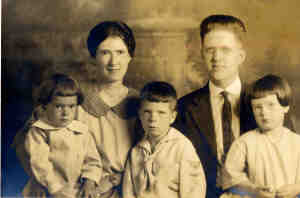

| 
Arthur Coy WOODWARD (1890-1944) |
Arthur Coy WOODWARD 173,275,3245
General Notes: Owned a family bank in Greencastle, Indiana. Bank went broke in the Depression and family moved west to Visalia, California to farm a fruit (peaches, grapes, plums) belonging to Fletcher Ayres. 255 Noted events in his life were: • Education: DePauw University: Greencastle, Putnam Co., Indiana, USA. 3245,3388 Arthur married Hazel Prue AYRES, daughter of Jeremiah AYRES and Margaret Eliza DOUTHITT, on 1 Aug 1913 in Greencastle, Putnam Co., Indiana, USA 3245.,3752 (Hazel Prue AYRES was born on 20 Jul 1892 in College Hill, Madison Co., Kentucky, USA 255,3245,3753 and died on 29 Oct 1968 in Warren, Huntington Co., Indiana, USA 3245,3752.) |
Search using Google Custom Search:
Table of Contents | Surnames | Name List
This website was created 2 Mar 2025 with Legacy 10.0, a division of MyHeritage.com; content copyrighted and maintained by coddgenealogy at gmail d0t com